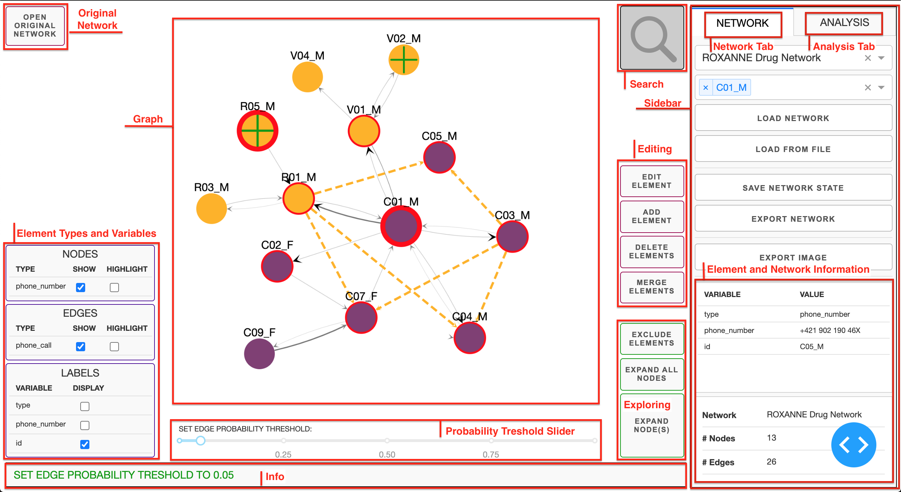
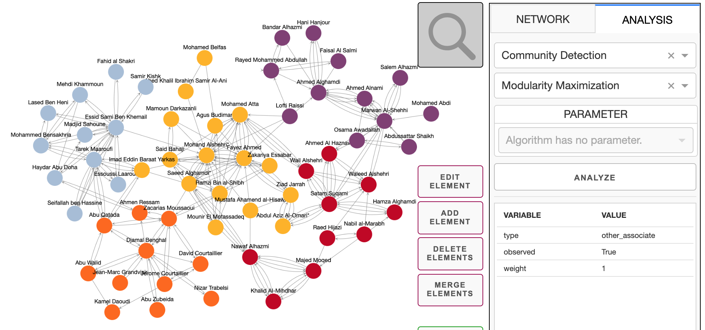

CrimeNet Network Visualizer & Intelligence Engine
Comprehensive user guide and technical documentation for law enforcement investigators, intelligence analysts, and forensic researchers operating the CrimeNet graph analysis platform.
01 System Overview & Capabilities
CrimeNet is an advanced criminal intelligence network analysis platform designed to ingest, resolve, visualize, and reason over heterogeneous, multi-jurisdictional crime records. Built upon high-performance graph algorithms (modularity maximization, spectral graph theory, and topological centrality models), CrimeNet transforms disparate evidence into defensible investigative leads.
Multi-Relational Graph Canvas
Interactive Cytoscape workspace supporting Person, Phone, Organization, Location, Vehicle, and FIR Case entities with dynamic filtering, label toggles, and steady zoom.
Louvain & Hierarchical Clustering
Automatic gang partition discovery via Louvain modularity optimization with 32 distinct color codes, alongside an interactive recursive dendrogram tree view.
Centrality & Broker Identification
PageRank authority rankings to isolate kingpins and mastermind handlers; Betweenness Centrality to uncover communications brokers connecting disparate syndicate cells.
Forensic Anomaly & Link Intelligence
5 explainable forensic anomaly detectors (odd-hour calls, Hawala structuring, mule accounts) combined with Adamic-Adar & Jaccard candidate link predictions.
02 End-to-End Investigation Lifecycle Flow
CrimeNet enforces a rigorous investigative workflow from evidence ingestion to judicial case presentation:
03 Setup & Deployment
The CrimeNet Visualizer server is built on Python 3 (Dash, Flask, Cytoscape, NetworkX, Scikit-learn).
Quick Start (Windows)
Double-click run.bat in the repository root. The batch launcher automatically detects your Python 3.13 environment and boots the web server:
D:\CrimeNet> run.bat
[OK] Using Python 3.13 from AppData...
Starting server at http://127.0.0.1:8050/
Dash is running on http://0.0.0.0:8050/Command Line Startup & Parameters
You can also start the server directly using Python:
py -3.13 visualizer\index.py [--data DIRECTORY] [--host HOST] [--debug]| CLI Parameter | Type | Description |
|---|---|---|
--data |
Path (Directory) | Optional path to a directory containing preprocessed network JSON files. Automatically populates the network dropdown. |
--host |
String (IP) | IP address to bind the listener to. Defaults to 0.0.0.0 (accessible locally and on LAN). |
--debug |
Flag | Enables Dash live hot-reloading and debug traceback overlays. |
04 Workspace & User Interface Architecture
The CrimeNet interface is architected around maximum visibility and rapid operational decision-making:

1. Cytoscape Graph Canvas (Center)
Interactive multi-relational force-directed graph. Drag nodes, click to inspect, click and drag canvas to pan. Supports mousewheel zoom with bounds protection.
2. Right Control Panel (Right)
Three primary operational tabs: NETWORK (load/save/export/edit), ANALYSIS (Louvain, Hierarchical Tree, Centralities), and INTELLIGENCE (Anomalies, Link Prediction, Path Tracer).
3. Control Boxes (Left Docked)
Collapsible filter controllers for NODES (type visibility & highlight), EDGES (relation visibility), and LABELS (ID, Name, Role, Case variables).
4. Navigation & Zoom Bar (Bottom Right)
Clean docked toolbar with - (zoom out), percentage scale (e.g. 100%), + (zoom in), FIT (fit entire graph into viewport), and CTR (re-center canvas).
05 Criminal Datasets (UNBOUND & 911)
CrimeNet includes two comprehensive operational reference datasets:
A. UNBOUND — Indian Criminal Network 2026
A synthetic dataset modeling an active organized interstate syndicate operating across Delhi-NCR and Mumbai/Thane across 6 interconnected FIRs:
| Entity / Relation Type | Visual Style | Examples & Real-World Meaning |
|---|---|---|
| Person | Yellow Circle | Operatives (Deepak Yadav, Rohit Malhotra, Imran Sheikh, Vikas Chauhan). |
| Phone | Pink Pentagon | Burner and subscriber SIM cards (9876543210, 9812345678, 9701122334). |
| Organization | Blue Square | Shell companies and corporate fronts (Sunrise Traders, Global Overseas Exports, Apex Infotech). |
| Location | Green Hexagon | Geographic sites and cell-tower towers (Karol Bagh, Nehru Place, Bhiwandi, Wagle Estate). |
| Vehicle | Cyan Octagon | Getaway sedans, transport tempos, stolen vehicles (DL8CAF5031, UP16BX7742). |
| Case (FIR) | Orange Triangle | Registered police FIRs (FIR-2026/0142 Extortion, FIR-2026/0147 Hawala, etc.). |
| Called (CDR) | Grey Directed Arrow | Telecom call records between two mobile devices (frequency and timestamp). |
| Transferred To | Grey Directed Arrow | Bank wire transactions (UPI, NEFT, RTGS) between bank accounts and entities. |
B. 911 Hijackers Terrorist Network
Historical conspiracy network documenting the 60 conspirators and hijackers involved in the September 11 attacks, modeling prior contacts and associate links.
06 Graph Exploration Controls
Investigators can dynamically manipulate visibility without modifying the underlying evidence:
| Button | Scope | Operational Action |
|---|---|---|
SEARCH |
Network-wide | Opens modal to search entities by Name, ID, or Phone number, with instant zoom-to-focus. |
CLEAR VIEW |
Selected Nodes | Isolates currently selected entities, temporarily hiding all unselected noise from canvas. |
SHOW ALL NODES |
All Nodes | Restores all hidden/excluded nodes back onto the canvas. |
EXPAND NODE(S) |
Selected Nodes | Fetches and displays 1st-degree outgoing connections for the selected nodes. |
EXPAND ALL NODES |
Entire Network | Unrolls all available connections across every active node in the network. |
EXCLUDE ELEMENTS |
Selected Elements | Removes selected nodes/edges from the visible view without deleting from dataset. |
OPEN ORIGINAL NETWORK |
Split Screen | Opens a side-by-side comparison pane showing the pristine initial network state. |
07 Graph Editing & Entity Resolution (Merge)
When incoming intelligence reveals new suspects, corroborates links, or identifies aliases, use the editing actions:
Add Element (Node / Edge)
Inject new suspects, phone numbers, or verified relationships (CDR call, bank transaction) by selecting source and target nodes.
Edit Element Properties
Update properties (e.g. adding Aadhaar ID, true name, role, or confidence score) to any node or edge.
Delete Elements
Permanently removes incorrect, duplicate, or disproven entities and relationships from the active session.
Merge Elements (Resolution)
Combines two alias profiles representing the same individual into one unified operative node, consolidating all edges.
08 Louvain Community Detection & Modularity
The Louvain method is an unsupervised modularity-maximization algorithm that detects tightly-knit clusters (syndicate sub-cells, financial laundering rings, operational teams) within the larger network.
Communities Detected, Nodes Analyzed, and updates each node's inspector with its community: <ID>.

09 Hierarchical Clustering Interactive Tree View
Unlike flat community detection, Hierarchical Agglomerative Clustering constructs a multi-tier recursive dendrogram revealing both high-level syndicates and granular sub-cells:
Interactive Tree Controls
- Expand All: Recursively opens all cluster folders down to individual suspect leaves.
- Collapse All: Condenses the tree view back to root and major cluster heads.
- Focus Cluster: Animates the camera to zoom and frame the active cluster members.
- Reset: Removes all cluster highlight borders and dimming classes, returning to default view.
10 Social Influence & Centrality Analysis
CrimeNet evaluates topological centrality to answer two distinct investigative questions: Who holds authority? and Who acts as the broker between cells?
| Algorithm | Target Question | Visual Representation |
|---|---|---|
| PageRank | Who is the central mastermind or highest authority receiving inbound directives/calls? | Node opacity & dark saturation: Darker nodes possess highest network influence. |
| Betweenness Centrality | Who is the critical courier or bridge whose arrest disrupts inter-cell communication? | Node size and broker rating highlighted in properties table. |
| Closeness Centrality | Who can disseminate messages or contraband across the entire network in the minimum hops? | Relative path distance from all other network entities. |
11 Link Prediction & Hidden Relationship Discovery
Link Prediction identifies unobserved, potential, or hidden relationships between suspects who do not have an existing evidentiary edge, but share significant mutual intermediaries or structural similarity.
#FFB301).
| Predictor Metric | Mathematical Basis | Forensic Use Case |
|---|---|---|
| Adamic-Adar Index | Penalizes common neighbors that are large public hubs, prioritizing shared rare contacts: $$\sum_{z \in N(x) \cap N(y)} \frac{1}{\log |N(z)|}$$ |
Detects two suspects calling the same covert burner phone or private handler. |
| Jaccard Coefficient | Ratio of shared common contacts over total combined network reach: $$\frac{|N(x) \cap N(y)|}{|N(x) \cup N(y)|}$$ |
Identifies conspirators operating in the exact same criminal social circle. |
| Resource Allocation | Inverted common neighbor degree distribution: $$\sum_{z \in N(x) \cap N(y)} \frac{1}{|N(z)|}$$ |
Surfaces shared couriers handling peer-to-peer delivery channels. |
12 Forensic Behavioral Anomalies (5 Detectors)
The UNBOUND forensic engine runs 5 specialized heuristic and behavioral detectors:
1. Odd-Hour Surveillance Calls
Flags communications occurring between 01:00 AM and 04:30 AM, typical of covert operations, extortion drops, and night transports.
2. High-Volume Financial Outliers
Detects transactions exceeding statistical peer group thresholds (e.g. ₹29.5L bulk transfers) indicating money laundering layering.
3. Hawala Smurfing & Structuring
Identifies rapid sequential payments just below statutory reporting limits (e.g. 3× ₹4.85L–₹4.92L RTGS deposits).
4. Cross-Case Resource Sharing
Surfaces vehicles or phone numbers appearing across multiple unrelated police station FIRs (proving interstate syndicate linkage).
5. Structural Broker Operatives
Pinpoints nodes with low degree but exceptionally high Betweenness centrality, acting as invisible cutouts.
13 Evidentiary Path Tracer & N-Hop Scoping
In judicial court filings, proving guilt requires demonstrating an unbroken evidentiary chain connecting a street operative to a kingpin:
Selecting two entities and clicking TRACE PATH executes Dijkstra's algorithm weighted by inverse confidence ($1/\text{confidence}$). The optimal path is highlighted in bright blue (#2783DE) while dimming unrelated elements.
14 Data Formats & Evidentiary Export
CrimeNet standardizes evidence into clean JSON Lines (.json) format:
Node Record Schema
{"type": "node", "id": "Deepak_Yadav", "properties": {"type": "person", "name": "Deepak Yadav", "cases": ["FIR-2026/0147", "FIR-2026/0151"]}}Edge Record Schema
{"type": "edge", "source": "phone_9876543210", "target": "phone_9812345678", "properties": {"type": "called", "observed": true, "weight": 3, "case": "FIR-2026/0142", "details": "3 calls at odd hours"}}Export Functions
- EXPORT IMAGE: Generates high-resolution PNG or JPEG forensic captures of the current graph state for charge-sheets.
- EXPORT NETWORK: Serializes all currently visible entities and relationships into an open JSON graph file.
- SAVE NETWORK STATE: Saves the complete workspace session including custom positions, manual edits, and active filter states.
15 FAQ & Operational Troubleshooting
EXPAND NODE(S) to reveal them.
NETWORK tab on the top right and press LOAD NETWORK or click RESET in the analysis summary card. This clears all color overlays and returns to default type coloring.